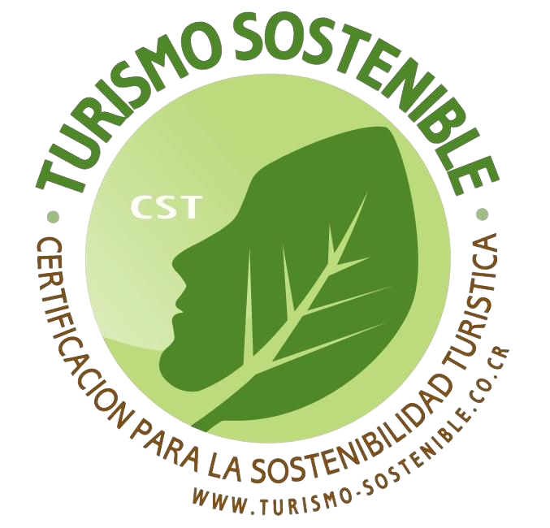

Ubicado al norte del Valle Central, sobre la Cordillera Volcánica Central, entre los macizos de los volcanes Poás e Irazú. Este maravilloso tesoro natural incluye los volcanes Barva y Cacho Negro, extendiéndose desde el Alto de la Palma al norte del cantón de Moravia, hasta la Zona Protectora La Selva en Puerto Viejo de Sarapiquí.
Cuenta con una elevación máxima de 2906 m s.n.m. en la cima del Volcán Barva y registra una temperatura mínima de 3 ºC y máxima de 24 ºC. Debido al gran gradiente altitudinal que abarca el Parque, la precipitación es muy variada y va desde los 2500 mm en las pendientes que dan al Valle Central hasta los 5734 mm en la vertiente Caribe.
El Parque Nacional Braulio Carrillo es una de las áreas protegidas más grandes de Costa Rica con 50 000 hectáreas y está ubicado en una de las zonas con la topografía más abrupta del país. El paisaje está constituido por montañas altas densamente cubiertas de bosques y gran cantidad de cañones por los que discurren ríos y quebradas de gran importancia en la producción de energía hidroeléctrica.